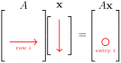

Recall the notion of row and column vectors from Definition 1.5.1. Row vectors and column vectors can be identified with the vectors occuring in Definition 1.1.1, i.e. an ordered list of scalars. The only difference is that in a row vector the ordered list of numbers is arranged horizontally, and for a column vector the ordered list is arranged vertically. The distinguish between these types of vectors, we will say “a row vector in \(\R^n\)” and “a column vector in \(\R^n\)”.
\(\mathbf{v}\) is a column vector in \(\R^3\text{.}\)
Note2.2.1.
An \(m\times n\) matrix \(A\) can be thought of a row of \(n\) column vectors of length \(m\text{,}\) i.e. we can write \(A=\begin{bmatrix}\mathbf{a}_1 \amp \mathbf{a}_2 \amp\cdots \amp \mathbf{a}_n\end{bmatrix}\text{,}\) where \(\mathbf{a}_i\) is a column vector in \(\mathbf{R}^m\text{,}\) the i-th column of \(A\text{.}\)
SubsectionMatrix-Vector Product
We start with an example.
Activity2.2.2.Linear Systems as Linear Combinations.
Let \(A=\begin{bmatrix}\mathbf{a}_1 \amp \mathbf{a}_2 \amp\cdots \amp \mathbf{a}_n\end{bmatrix}\) be an \(m\times n\) matrix, written in terms of its columns \(\mathbf{a}_1, \mathbf{a}_2, \ldots, \mathbf{a}_n\text{.}\) If
Notice that we can now write a linear system of equations as a single matrix equation: Consider a linear system of \(m\) equations in \(n\) unknowns of the form
Using the matrices defined above, how can we rewrite the linear system as a single matrix equation?
Solution.
We can rewrite this system as the matrix equation: \(A\mathbf{x}=\mathbf{b}\text{.}\)
Every system of linear equations has the form \(A\mathbf{x}=\mathbf{b}\) where \(A\) is the coefficient matrix, \(\mathbf{b}\) is the constant matrix/vector, and \(\mathbf{x}\) is the matrix/vector of variables.
The system \(A\mathbf{x} =\mathbf{b}\) is consistent if and only if \(\mathbf{b}\) is a linear combination of the columns of \(A\text{.}\)
The last row of this matrix implies the system is inconsistent, so no solution exists. Thus, \(\mathbf{b}\) is not a linear combination of the given vectors.
Activity2.2.6.Special Matrix-Vector Products.
(a)
If \(\mathbf{x}=\mathbf{0}\text{,}\) what is \(A\mathbf{x}\text{?}\)
Solution.
If \(\mathbf{x}=\mathbf{0}\text{,}\) then \(A\mathbf{x}=\mathbf{0}\text{.}\)
(b)
If \(A\) is the zero matrix, what is \(A\mathbf{x}\text{?}\)
Solution.
If \(A\) is the zero matrix, then \(A\mathbf{x}=\mathbf{0}\)
SubsectionMatrix-Vector Product Properties
Theorem2.2.3.
Let \(A\) and \(B\) be \(m\times n\) matrices, and let \(\mathbf{x}\) and \(\mathbf{y}\) be column vectors in \(\R^n\text{.}\) Then:
SubsectionMatrix-Vector Products Using Dot Products
We can express Matrix-Vector multiplication using dot products. Recall the definition of the dot product of two vectors from Definition 1.1.12. Since row and column vectors can be considered as vectors, we can consider their dot products.
Activity2.2.8.Computing a Dot Product.
Compute the dot product of \((-2, \pi, 0, 3/4)\) and \((3, 7, -4, 12)\text{.}\)
Let \(A\) be an \(m\times n\) matrix and let \(\mathbf{x}\) be a column vector in \(\R^n\text{.}\) Then each entry of the vector \(A\mathbf{x}\) is the dot product of the corresponding row of \(A\) with \(\mathbf{x}\) (see Figure 2.2.5).

Figure2.2.5.The \(i\)th entry of \(A\mathbf{x}\) is obtained by taking the dot product of the \(i\)th row of \(A\) with the vector \(\mathbf{x}\text{.}\) Adapted from Vretta-Lyryx
Activity2.2.9.Matrix-Vector Product via Dot Products.
Compute the product \(A\mathbf{x}\) using the dot product, where
Conversely, the dot product can be calculated in terms of matrix multiplication. If we consider two \(n\)-vectors \(\mathbf{v}\) and \(\mathbf{w}\text{,}\) then the scalar \(\mathbf{v} \cdot \mathbf{w}\) is equal to the only entry in the \(1 \times 1\) matrix \(\mathbf{v}^T \mathbf{w}\text{.}\)
Definition2.2.7.The Identity Matrix.
For each \(n \geq 2\text{,}\) the identity matrix \(I_n\) is the \(n\times n\) matrix with 1s on the main diagonal (upper left to lower right), and zeros elsewhere.
where \(t_j = 1\text{,}\) but \(t_i = 0\) for all \(i \neq j\text{.}\) These vectors are called the standard basis vectors for \(\R^n\) (the word ‘basis’ will be defined in Definition 4.2.10).
In \(\R^2\text{,}\) it is sometimes common to use the notation \(\mathbf{i}\) and \(\mathbf{j}\) for the standard basis \(\mathbf{e}_1\) and \(\mathbf{e}_2\text{.}\) Similarily, in \(\R^3\) it is common to use the notation \(\mathbf{i}\text{,}\)\(\mathbf{j}\text{,}\) and \(\mathbf{k}\) for the standard basis \(\mathbf{e}_1\text{,}\)\(\mathbf{e}_2\text{,}\) and \(\mathbf{e}_3\text{.}\) This notation is most common amongst physicists and engineers.
Activity2.2.11.Finding a Standard Basis Vector.
For \(\R^4\text{,}\) what is \(\mathbf{e}_3\text{?}\)
If \(A=\begin{bmatrix}\mathbf{a}_1 \amp \mathbf{a}_2 \amp\cdots \amp \mathbf{a}_n\end{bmatrix}\) is an \(m\times n\) matrix, then for \(j = 1 \ldots n\text{,}\)
Let \(A\) and \(B\) be \(m\times n\) matrices. If \(A\mathbf{x}=B\mathbf{x}\) for all \(\mathbf{x}\) in \(\R^n\text{,}\) then \(A=B\text{.}\)
Activity2.2.13.Proof of Matrix Equality.
Prove the theorem above.
Solution.
Since \(A\mathbf{x} = B\mathbf{x}\) for all \(\mathbf{x}\text{,}\) choose \(\mathbf{x} = \mathbf{e}_j\) for \(j=1,\dots,n\text{.}\) Then \(A\mathbf{e}_j = B\mathbf{e}_j\) for all \(j\text{.}\) But using Fact 2.2.10, this means that the \(j\)th column of \(A\) is equal to the \(j\) column of \(B\text{.}\) Since this is true for all \(j\text{,}\)\(A=B\text{.}\)
SubsectionTransformations
Geometric operations can be described via matrix-vector products.
Definition2.2.12.Transformations.
A function \(T: \R^n \to \R^m\) is called a transformation from \(\R^n\) to \(\R^m\text{.}\) A transformation \(T\) assigns to each vector \(\mathbf{x}\) in \(\R^n\) a uniquely determined vector \(T(\mathbf{x})\) in \(\R^m\text{,}\) called the image of \(\mathbf{x}\) under \(T\text{.}\)
Given an \(m\times n\) matrix \(A\text{,}\) we can consider the transformation \(T_A: \R^n \to \R^m\) given by multiplying vectors by \(A\) (viewing those vectors as column vectors), i.e.
\begin{equation*}
T_A(\mathbf{x}) = A \mathbf{x}\text{.}
\end{equation*}
For each \(\mathbf{x}\) in \(\R^n\text{.}\)\(T_A\) is called the matrix transformation induced by \(A\text{.}\)
Activity2.2.15.Reflection Transformation.
Consider the transformation in \(\R^2\) given by reflection across the \(y\)-axis, i.e. so that the vector \((a_1,a_2)\) is sent to the vector \((-a_1,a_2)\text{.}\) We can represent this reflection via a matrix-vector product. Find the matrix.